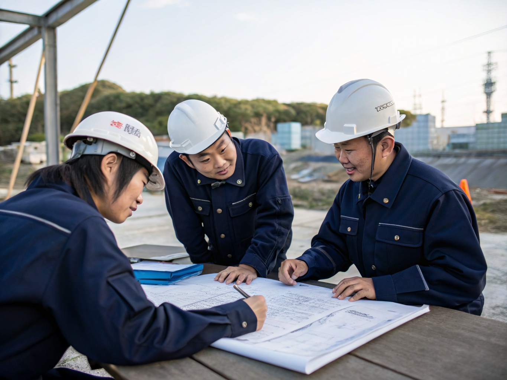
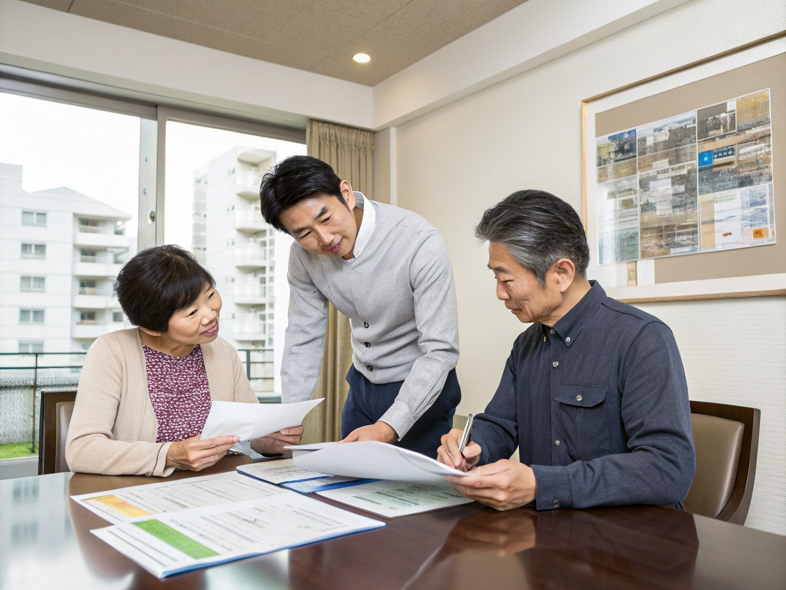
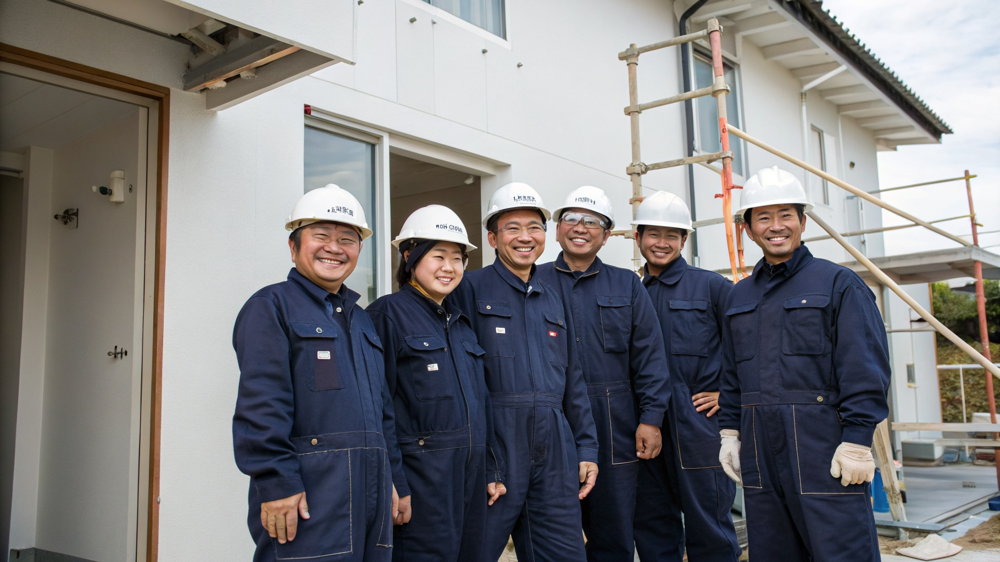

技術と誠実さで、建物を守るプロフェッショナルたち
防水工事チームリーダー / 1級防水施工技能士
防水工事歴15年。ウレタン防水・シート防水のスペシャリスト。「水を一滴も通さない」をモットーに、丁寧な施工を心がけています。

施工管理 / 1級建築施工管理技士
施工管理歴12年。大規模修繕工事を中心に、工程・品質・安全管理を担当。お客様との丁寧なコミュニケーションを大切にしています。

施工管理 / 建物診断担当
建物診断のスペシャリスト。女性ならではの細やかな視点で、お客様にわかりやすい診断レポートを作成しています。

久米技建チーム集合写真
自社職人21名・施工管理4名の総勢25名体制で、お客様の建物をお守りします。